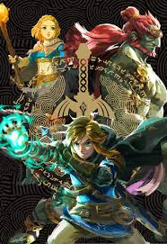

Bienvenue sur le site de Zelda: Tears of the Kingdom
Zelda: Tears of the Kingdom est un jeu vidéo d'action-aventure développé et publié par Nintendo pour la console Nintendo Switch. Il s'agit de la suite de The Legend of Zelda: Breath of the Wild.
Caractéristiques du jeu
- Exploration d'un vaste monde ouvert
- Graphismes époustouflants
- Quêtes et énigmes captivantes
- Combats dynamiques
Trailer
Personnages principaux
- Link
- Zelda
- Ganondorf
- Babil (peuple Piaf)
- Yunobo (peuple Goron)
- Sidon (peuple Zora)
- Riju (peuple Gerudo)
- Raurou (peuple Soneau)
- Sonia (peuple Soneau)
- Impa (Village de Cocorico)
Galerie
Peuple Piaf
Le peuple piaf est un peuple d'oiseau bipède situé au Nord-Ouest du Royaume d'Hyrule, dans la région de Tabanta.
Musique:
Imagerie


Peuple Goron
Le peuple goron est un peuple de ~pierre humanoïde~ situé au Nord-Est du Royaume d'Hyrule, sur la Montagne de la Mort.
Musique:
Imagerie


Peuple Zora
Le peuple zora est un peuple d'homme-poisson situé au Nord-Est du Royaume d'Hyrule, dans la région de Lanelle.
Musique:
Imagerie


Peuple Gerudo
Le peuple gerudo est un peuple de femmes guerrières situé au Sud-Est du Royaume d'Hyrule, dans le Désert Gerudo.
Musique:
Imagerie